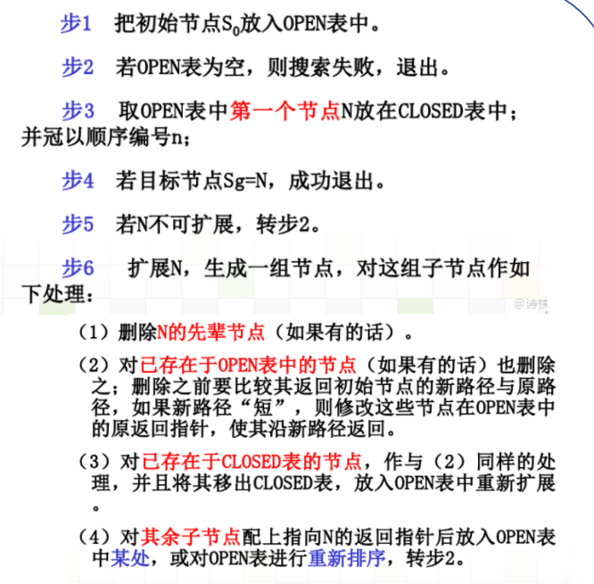

问题的定义¶
良定义的问题和解¶
- 初始状态s
- 可能行动a
- 转移模型：对每个行动的描述，RESULT(s, a)
- 目标测试：确定给定的状态是否是目标状态
- 路径耗散函数：为每条路径加权，度量解的质量
问题的类型&解的类型¶
- 单一状态问题：确定的动作后果，完全可观，智能体确切知道自己将处于什么状态。解是一个序列。
- 构造问题：确定的动作后果、部分可观智能体不知道自己处于什么状态；解（如果存在的话）是一个序列
-
偶然事件问题：不确定的动作后果、部分可观感知提供关于目前状态的最新信息；解是树或是一种策略。常常是搜索/执行交替进行。
-
探索性问题：对状态空间一无所知
搜索算法¶
搜索树¶
搜索树节点数据：
- n.STATE：状态空间中与该节点相对应的状态**
- n.PARENT：父节点,即产生该节点的节点
- n.ACTION (from the parent to the node)：由父节点产生该节点所用的行动
- n.PATH-COST：代价，从初始状态到达该节点路径消耗
边缘（open表）：任一给定时间点，所有待扩展的叶节点的集合。
探索集（closed表）：用于存储每个扩展过的节点。
树搜索算法¶

搜索算法的性能度量¶
-
完备性：有解时能否保证找到解
-
最优性：这个搜索策略是否能找到最优解
-
时间复杂度：根据搜索过程中产生的节点数目来度量，即找到解所花的时间
-
空间复杂度：在执行搜索的过程中需要的内存多少
基本搜索算法¶
广度优先搜索BFS¶
一层一层搜索，完成这一层的搜索后才进入下一层。
可以解决最短路径、最小步数等问题（不带权边）。
一致代价搜索¶
深度优先搜索DFS¶
首先扩展未被扩展的节点中最深的那个。
迭代加深搜索IDS¶
在DFS的基础上增加深度限制，且深度限制不断增加。
一般来说，当搜索空间很大且解的深度未知时，迭代加深搜索是首选的盲目搜索方法。
双向搜索BS¶
BS的假设是我们不仅可以从初始节点出发，同时还可以从目标节点出发，从而实现双向的搜索。实际上是双向的BFS。
BS就是将BFS画的半径为d的一个大圆，换成了半径为d/2的两个小圆。